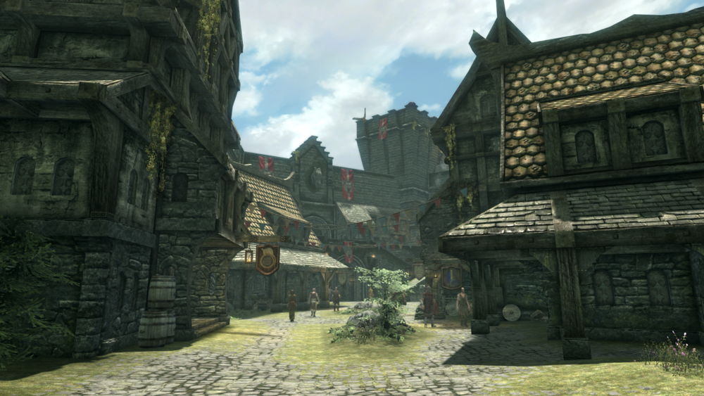

Администрация
Синий дворец

"Этот город имеет долгую историю безумия и убийств. Волчья королева ... Пелагий ... Смерть верховного короля Торигга ... А теперь публичные казни. Мои книги рассказывают истории. Не сомневайтесь - какими бы красивыми ни были его улицы, какими бы веселыми ни были барды ... Тьма тянется к Солитьюду. " —Стирр

Солитьюд — крупнейший процветающий город, расположенный во владении Хаафингар, на северо-западе Скайрима, один из самых северных городов всего Тамриэля. Процветание обусловлено прямым доступом к основным морским путям материка. Столица владения и всей провинции Скайрим, жемчужина имперского Скайрима, соответственно здесь расположена резиденция верховного короля.мудростью. Уставший от странствий Довакин может также отдохнуть в местной таверне или поработать на лесопилке.Солитьюд (ориг. Solitude) в переводе с английского и французского означает «одиночество», «безлюдное место», что очень странно для крупного, портового, столичного города с большим населением. Более 80% жителей владения Хаафингар проживает в стенах Солитьюда, что является свидетельством политической важности города, надёжности оборонительных сооружений, а также отличительной особенностью жителей данного владения. Солитьюд первоначально был разработан в качестве места пребывания имперцев в Скайриме. В результате архитектура города отражала имперский стиль из прошлых игр The Elder Scrolls. Идея строительства его на сухопутном мосту возникла ещё в начале разработки и является, пожалуй, самой уникальной особенностью города. Его укрепления поражают воображение. Чтобы попасть в город, неприятелю понадобится для начала захватить двое ворот и три башни. Первая из этих башен — Небесная — находится на перекрёстке. Вторую башню вместе с первыми, малыми воротами называют Шквальными воротами. Последние, самые укреплённые — Грозовые ворота. За ними расположен Колодезный район — главный торговый центр Солитьюда. Самым приметным зданием, которое бросается в глаза сразу после входа в город, является величественная Императорская башня, служившая пристанищем королям Хаафингара ещё до объединения Скайрима и возведения Синего дворца. Теперь же она используется исключительно в качестве гостевых покоев для императоров, когда те посещают город. Слева и справа от входа располагаются различные лавки и таверна «Смеющаяся крыса». Здесь можно найти одни из лучших импортных товаров в Скайриме. Сразу за аллеей торговых точек находится склон, ведущий наверх к Мрачному замку. За Императорской башней можно разглядеть каменный мост Солитьюда, изящной дугой простирающийся к ветряной мельнице. Башня и ветряная мельница являются самыми узнаваемыми достопримечательностями Солитьюда. Когда-то силой ветряной мельницы открывались ворота нынешнего склада Восточной имперской компании, но теперь эта задача ложится на крепкие спины рабочих дока. Под сенью ветряной мельницы находится уличный рынок и колодец. Мрачный замок — фортификационное сооружение с весьма массивными стенами — штаб-квартира Имперского легиона. Во дворе замка расположен Храм Богов. Империя хранит значительные запасы в Мрачном замке, откуда генерал Туллий командует всеми размещёнными в Скайриме легионами. В окрестностях города также расположена штаб-квартира Талмора. Одна из причин этого — исключительно удобный для обороны тип города. Наиболее известное учреждение в Солитьюде — Коллегия бардов — музыкальная школа, обучающая странствующих воинов-музыкантов, поэтов и писателей. Здание легко узнать по горящему рядом со ступенями Огню Калиссоса. Около 4Э 201 городом правит ярл Элисиф Прекрасная, вдова покойного верховного короля Торуга. Резиденцией Верховных королей Скайрима является Синий дворец, расположенный в дальней, наиболее защищённой части города. В верхней части северо-восточного крыла, по левую сторону от входа, располагаются жилые покои ярла и её придворных, а под ними — помещения для прислуги. Юго-западное крыло, известное как Крыло Пелагия, давно пришло в упадок. Это крыло назвали в честь знаменитого верховного короля Пелагия Безумного, чей призрак, по слухам, скитается там до сих пор. Крыло было закрыто вскоре после его смерти, и теперь туда никого не пускают.
Оказавшись впервые в городе, Драконорождённый становится свидетелем казни Роггвира за измену Империи — он открыл ворота и выпустил Ульфрика Буревестника из города после убийства верховного короля Торуга. Многие жители впоследствии вспоминают эту казнь. Здесь Довакин может вступить в ряды Имперского легиона. В Мрачном замке присягу примут лично генерал Туллий и его помощница — легат Рикке. Так как Мрачный замок является штаб-квартирой Имперского легиона в Скайриме, то все задания Довакин будет получать именно тут, также сюда придётся возвращаться с отчётами после выполнения приказов генерала. Если же события гражданской войны развиваются благоприятно для восставших, то город подвергнется штурму Братьев Бури, и Довакин вместе с Ульфриком Буревестником и его «правой рукой», Галмаром Каменный Кулак, захватят город и произведут штурм Мрачного замка, где состоится финальная битва с генералом Туллием и легатом Рикке с последующей казнью генерала (Рикке погибает в бою).
Администрация | |
Синий дворец | |
| Ярл Элисиф Прекрасная | Фолк Огнебород |
| Мрачный замок | |
| Генерал Туллий | Легат Рикке |
| |
Гильдии | |
| Коллегия бардов | |
| Бендт | Айа Аррия |
| Ильди | |
| Главная улица | Город на утёсе | Мрачный замок |